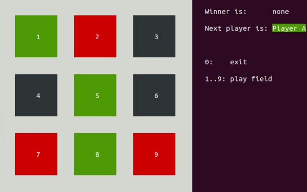

05 - SNP: TicTacToe¶

Contents
Übersicht¶
In diesem Praktikum erweitern Sie einen Programm Rahmen zu einem funktionierenden TicTacToe Spiel. Bei TicTacToe legen zwei Spieler abwechselnd auf einem 3x3 Brett einen Stein, bis ein Spieler mit einer horizontalen, vertikalen oder diagonalen Linie gewinnt, oder alle Felder besetzt sind.
In der Aufgabe implementieren Sie die fehlenden Funktionen bis alle Tests erfolgreich durchlau-fen. Die gewählte Vorgehensweise ist somit TDD – Test-Driven-Development: es existieren zuerst Tests welche alle fehlschlagen. Schrittweise werden die Funktionen implementiert bis alle Tests erfolgreich durchlaufen.
Wenn die Tests erfolgreich durchlaufen, wird auch das Programm funktionieren und Sie können jemanden mit dem Spiel herausfordern 😉.
Lernziele¶
In diesem Praktikum lernen Sie den Zugriff auf Arrays.
Sie können anhand einer Beschreibung im Code die fehlenden Funktionen implementieren wo auf Arrays zugegriffen wird.
Die Bewertung dieses Praktikums ist am Ende angegeben.
Erweitern Sie die vorgegebenen Code Gerüste, welche im git Repository snp-lab-code verfügbar sind.
Aufgabe: TicTacToe¶
Das zu ergänzende Programm tic-tac-toe hat folgende Funktionalität: #. es stellt ein 3x3 TicTacToe Spielbrett auf dem Terminal dar #. es liest von stdin eine Ziffer 0…9 ein, wobei 0 für Programm-Terminieren, die übrigen Ziffern für die Wahl eines Feldes stehen #. der erste Spielzug wird von Spieler A geführt, danach wechselt das Programm zwischen den Spielern A und B # bei Gewinn oder bei vollem Brett ist das Spiel vorbei
Wenn die Aufgabe erfolgreich umgesetzt ist, können Sie das Spiel ausführen:
`bash
bin/tic-tac-toe
`
Als Abnahme müssen die Tests unverändert ohne Fehler ausgeführt werden (make test).
Die Architektur des Programms folgt dem MVC – Model-View-Control Paradigma. Dieses Paradigma besagt, dass die View (Eingabe und Darstellung) über Control (Vermittler) das Modell (die eigentliche Programm-Logik) steuert und darstellt. Dabei sind folgende Abhängigkeiten gegeben:
Test-Driven-Development¶
Das Programm besteht aus folgenden Files:
Datei |
ToDo |
Makefile |
|
tests/tests.c |
|
src/main.c |
|
src/view.h |
|
src/view.c |
|
src/control.h |
|
src/control.c |
|
src/model.h |
|
src/model.c |
siehe unten |
Führen Sie
make testaus:
Suite: lab test Test: test_model_init init_model:… 0/0 FAILED
tests/tests.c:62 - CU_ASSERT_EQUAL_FATAL(instance->board[row][col],model_state_none)
- Test: test_model_get_state …FAILED
tests/tests.c:62 - CU_ASSERT_EQUAL_FATAL(instance->board[row][col],model_state_none)
- Test: test_model_get_winner …FAILED
tests/tests.c:62 - CU_ASSERT_EQUAL_FATAL(instance->board[row][col],model_state_none)
- Test: test_model_can_move …FAILED
tests/tests.c:62 - CU_ASSERT_EQUAL_FATAL(instance->board[row][col],model_state_none)
- Test: test_model_move …FAILED
tests/tests.c:62 - CU_ASSERT_EQUAL_FATAL(instance->board[row][col],model_state_none)
- Test: test_model_get_win_line …FAILED
tests/tests.c:62 - CU_ASSERT_EQUAL_FATAL(instance->board[row][col],model_state_none)
- Run Summary: Type Total Ran Passed Failed Inactive
- suites 1 1 n/a 0 0
tests 6 6 0 6 0
asserts 6 6 0 6 n/a
2. Konzentrieren Sie sich auf den ersten Test der fehlschlägt. Dies ist ein Unit Test, welcher die Funktion model_init() prüft. Suchen Sie die Funktion in src/model.h und src/model.c. Was ist die geforderte Funktionalität und wie ist sie implementiert? Suchen Sie die darin aufgerufene model_init() Funktion und implementieren Sie diese.
void model_init(model_t *instance) {
assert(instance);
// Instructions to the students:
// set all fields of the board to model_state_none
// BEGIN-STUDENTS-TO-ADD-CODE
// END-STUDENTS-TO-ADD-CODE }
Führen Sie
make testund korrigieren Sie obige Funktion, bis der Test nicht mehr fehlschlägt.
3.2 test_model_init¶
Gehen Sie analog zur ersten Teilaufgabe vor:
1. Führen Sie make test aus.
2. Suchen Sie die Funktion model_get_state() in model.h und model.c.
3. Implementieren Sie die intern benutzte Funktion get_state() gemäss der Anleitung im Code.
model_state_t model_get_state(model_t *instance, model_pos_t pos)
{
assert(instance);
assert_pos(pos);
// Instructions to the students:
// replace the stub implementation my access to the field at the given position.
// BEGIN-STUDENTS-TO-ADD-CODE
return model_state_none; // stub
// END-STUDENTS-TO-ADD-CODE
}
Führen Sie
make testund korrigieren Sie, bis die beiden Tests nicht mehr fehlschlagen.
3.3 test_model_get_state test_model_get_winner¶
Gehen Sie analog zur ersten Teilaufgabe vor:
1. Führen Sie make test aus.
2. Suchen Sie die Funktion model_get_state() in model.h und model.c.
3. Implementieren Sie die intern benutzte Funktion get_state() gemäss der Anleitung im Code.
model_state_t model_get_state(model_t *instance, model_pos_t pos)
{
assert(instance);
assert_pos(pos);
// Instructions to the students:
// replace the stub implementation my access to the field at the given position.
// BEGIN-STUDENTS-TO-ADD-CODE
return model_state_none; // stub
// END-STUDENTS-TO-ADD-CODE
}
3.4 test_model_can_move¶
Gehen Sie analog den obigen Teilaufgaben vor und implementieren Sie, gemäss Vorgaben im Code, die Funktion model_can_move().
int model_can_move(model_t *instance){
assert(instance);
if (model_get_winner(instance) == model_state_none) {
// Instructions to the students:
// scan all fields: return 1 with first field which equals model_state_none
// BEGIN-STUDENTS-TO-ADD-CODE
// END-STUDENTS-TO-ADD-CODE}
return 0;}
3.5 test_model_move test_model_get_win_line¶
Schliesslich gehen Sie auch hier analog den obigen Teilaufgaben vor und implementieren Sie, gemäss Vorgaben im Code, die Funktion set_state().
/**
* @brief Sets the field on the board to the given state.
* @param instance [INOUT] The instance which holds the state.
* @param pos [IN] The affected field.
* @param state [IN] The new state of the field.
*/
static void set_state(model_t *instance, model_pos_t pos, model_state_t state)
{
assert_pos(pos);
// Instructions to the students:
// set the field of the board to the new state
// BEGIN-STUDENTS-TO-ADD-CODE
// END-STUDENTS-TO-ADD-CODE
}
Wenn die beiden obigen Teilaufgaben erfolgreich umgesetzt sind, laufen die Tests ohne Fehler durch und das Spiel kann gespielt werden.
4. Bewertung¶
Die gegebenenfalls gestellten Theorieaufgaben und der funktionierende Programmcode müssen der Praktikumsbetreuung gezeigt werden. Die Lösungen müssen mündlich erklärt werden.
Aufgabe |
Kriterium |
Gewicht |
TicTacToe |
Sie können das funktionierende Programm inklusive funktionierende Tests demonstrieren und erklären. |
|
TicTacToe |
Teilaufgabe test_model_init |
1 |
TicTacToe |
Teilaufgabe test_model_get_state und test_model_get_winner |
1 |
TicTacToe |
Teilaufgabe test_model_can_move |
1 |
TicTacToe |
Teilaufgabe test_model_move und test_model_get_win_line |
1 |
Version: 15.02.2022